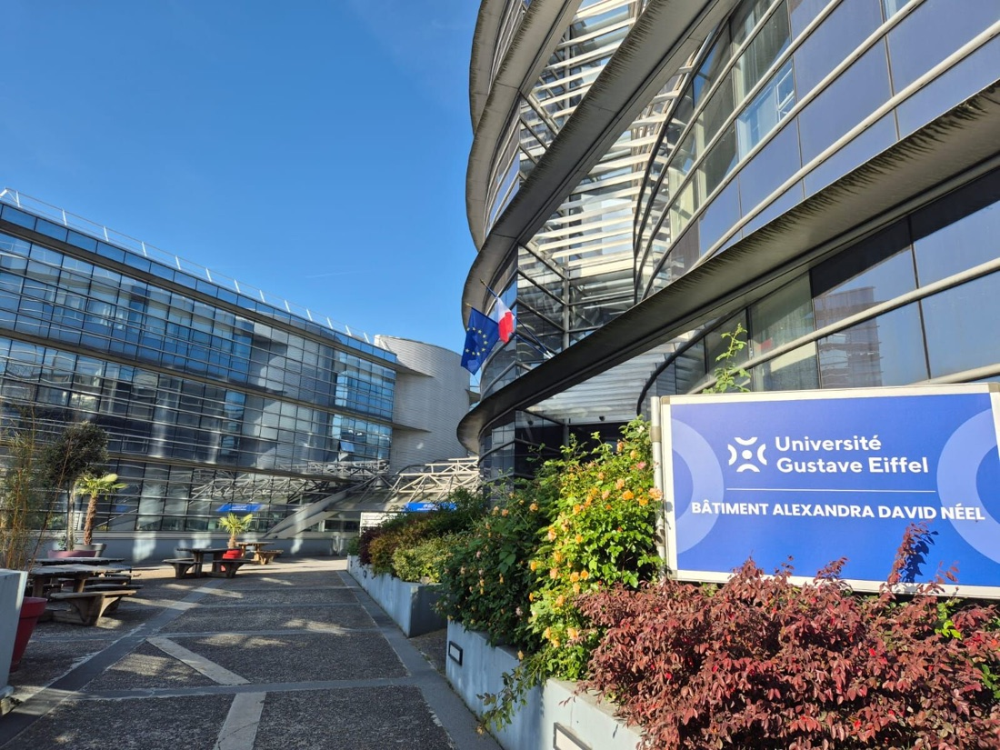
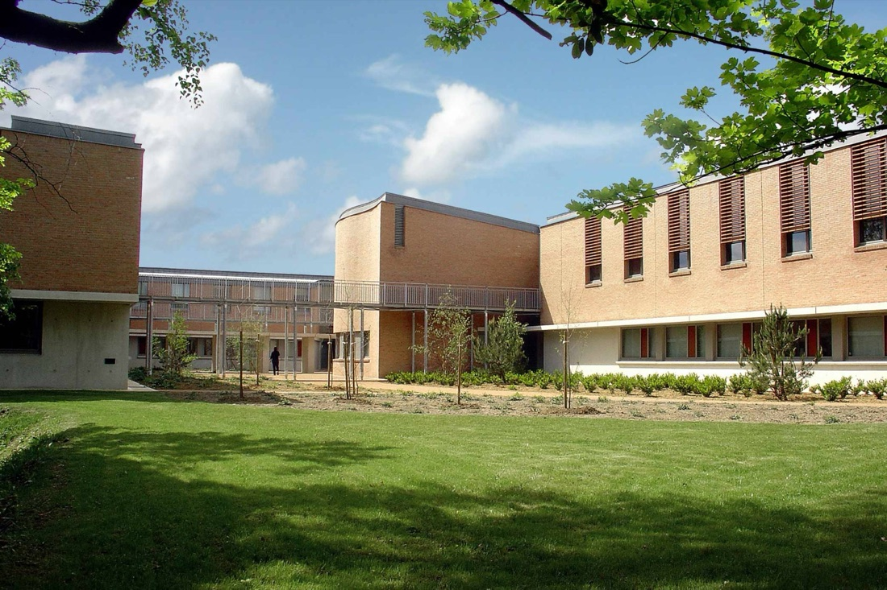

Anis Slimani
Inter-disciplinary Creative Tech
Anis Slimani
Inter-disciplinary Creative
Hi, I’m Anis Slimani. Welcome to a selection of my life’s work.
This portfolio collects projects shaped by academic research and personal curiosity in equal measure. Some began as coursework, others as the need to build, test, and express an idea. Together they show how I work: design as the place where strategy, visuals, technology, and storytelling meet.
I studied Visual Studies, Multimedia & Digital Arts at Université Gustave Eiffel. Half of it was theory: where images come from, starting at the earliest attempts to recreate what we see, moving through painting and drawing, then the arrival of photography and film, and on into analyzing media and visual art across every medium they have taken since. That half taught me an image is an argument before it is a picture.
The other half was making them. Building a digital image from nothing, either by drawing it or by writing the rules that generate it, and producing graphics and visual media in whatever software suited the idea. Adobe suite most days, 3D modeling often, a couple of courses on photography, and by the end using all of it to build our own games and mount our own exhibitions.
Then an MSc in Human-Computer Interaction at Université Paris-Saclay, where the same curiosity turned technical. Interactive games written from scratch, extended reality prototypes, data visualization, digital fabrication, robotics, and user research run properly, with participants, protocols, and results that sometimes contradicted what I wanted to hear. Projects there had a habit of outgrowing their brief, which is why they are on a website instead of in a folder.
What connects the two is a refusal to pick a side. An image and a piece of software can both be drafted, tested, and made to say something clearer than they said the first time.



